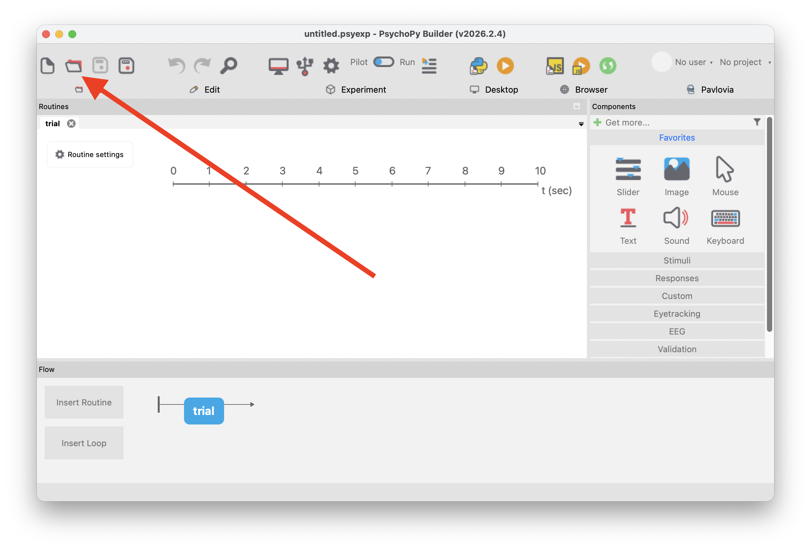
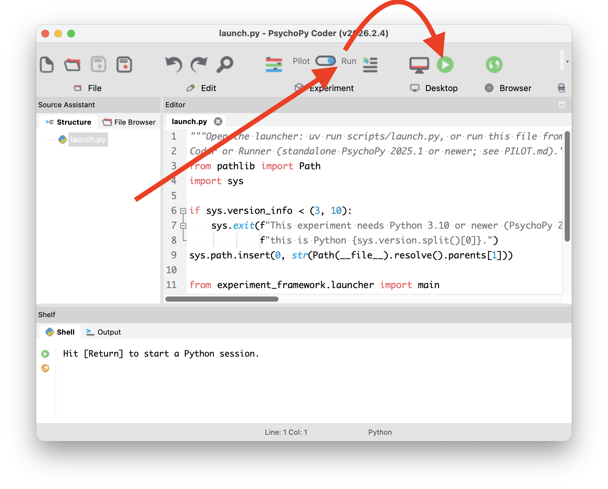
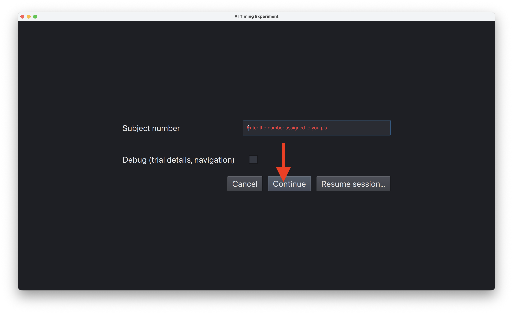
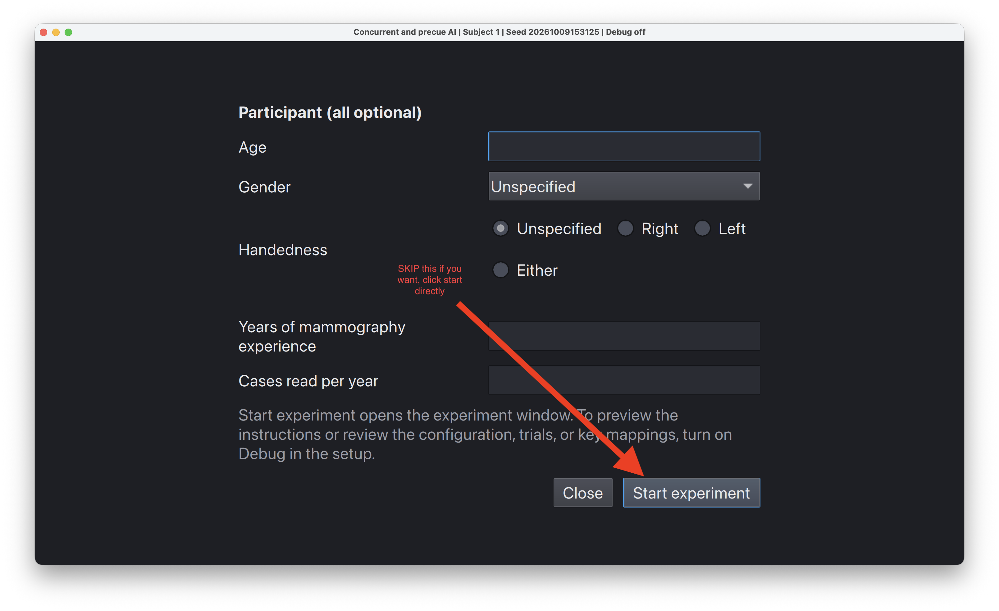
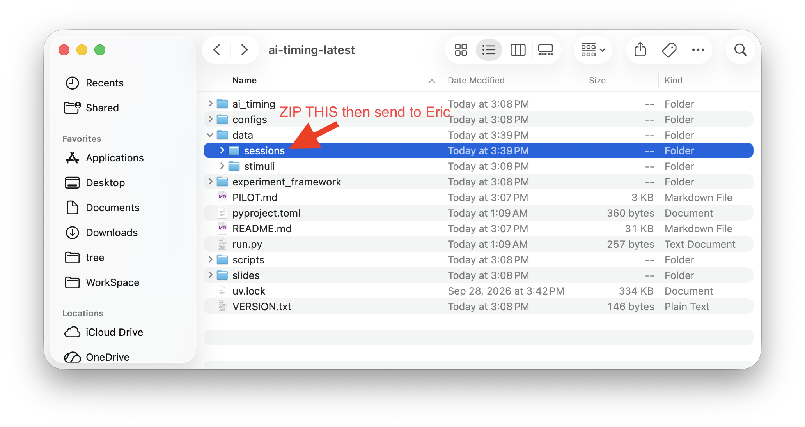

Running the pilot
You’ll need PsychoPy standalone 2025.1 or newer and the unzipped ai-timing-latest folder. Don’t move any files inside that folder.
A session has 46 practice trials and 900 main trials (15 blocks of 60, with no AI or with one of two labelled AIs). With breaks it takes about an hour.
1. Open the launcher
Open PsychoPy. Click the Open button (the folder icon) and select scripts/launch.py in the experiment folder.

2. Run it
launch.py opens in the Coder window. Check that the switch next to Pilot is set to Run, then click the green ▶ button.

3. Enter the subject number
Type the subject number you were assigned. Leave Debug unticked. Click Continue.

Use each subject number only once. The number sets the order of the conditions.
4. Start the experiment
The participant details are optional, so you can skip them. Click Start experiment.

During the session
| Key | Action |
|---|---|
| F | Absent |
| J | Present |
| Space twice, quickly | Start each part, or continue after a break |
| P | Pause, save, and close (see below) |
| Ctrl+Shift+Q | End the session early (completed trials are saved) |
PsychoPy closes when the session finishes. To run the next participant, start again from step 2.
Emergency: stop and resume later
If you have to stop partway through:
- Press P. The session is saved and the window closes.
- When you’re ready to continue, open
launch.pyand click ▶ again, as in steps 1 and 2. - On the setup form, click Resume session… (see the screenshot in step 3). You don’t need to type the subject number.
- Go to
data/sessions/and open the folder for that session. Its name starts withs<subject number>-. Select thesession.jsonfile inside it. - The session picks up where it stopped. The subject number and participant details are restored automatically.
Resuming restarts from the last break, not the exact trial where you stopped. In the main task that is the start of the current 60-trial section. In practice it is the start of the current practice part. A few trials will repeat, and that is expected.
If you pressed Ctrl+Shift+Q by accident, or PsychoPy crashed, follow the same steps. Resume also works on sessions that were ended early.
A resumed session saves to a new folder. Keep both folders and send both back.
5. Send the data back
Open data/ in the experiment folder. Zip the sessions folder and send it to Eric.

- Send every session folder, including incomplete, resumed, and test sessions.
- Don’t include
stimuli/. It holds the images and is large. - The files contain participant details, so send them through a secure channel. Don’t use plain email.
If something goes wrong
- The window opened on the wrong monitor: open
configs/config.tomlin a text editor. Under[display], setscreen = 1(or2). - The experiment froze: wait 60 seconds before closing it, then send back that session’s folder.